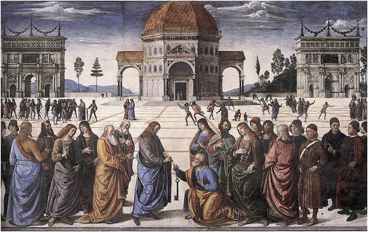
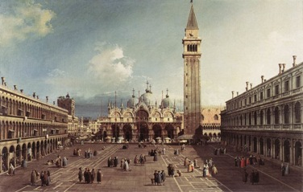
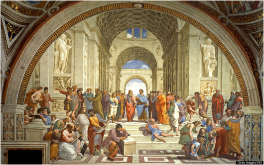
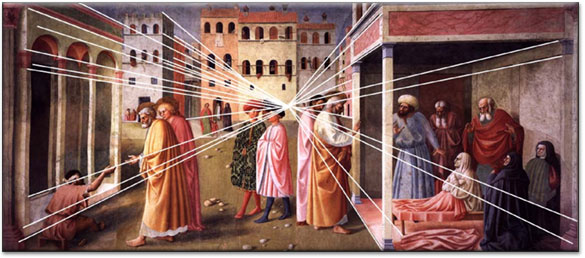
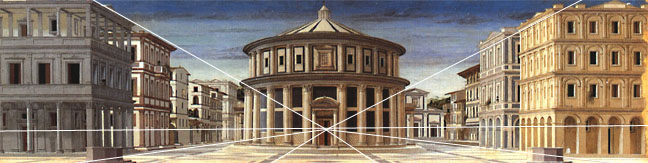
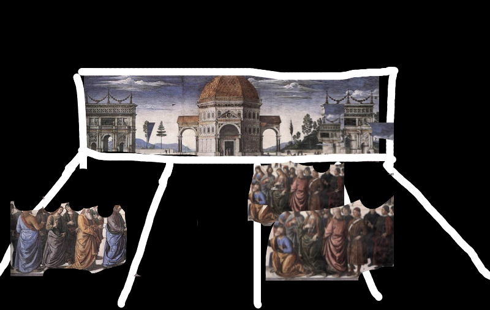

Large landscape paintings are always drawn following perspective principle. This project will try to extract the lines that are “parallel” on the building and construct perspective lines and the converging point on the painting. We can evaluate the perspective accuracy of the painting and even recreate a perspective correct version of it. After we get the converging/vanishing point, we will run a segmentation method to extract the objects, people and buildings in the foreground from the background. We will find a way to tell the distance of the objects on the paintings from the viewpoint. Then we can use the z-values that we get from the previous step and create a 2.5d space that contains several layers that have different distance from the viewpoint of the painting. The space will be able to be rotated, transformed and modified.
After browsing many painting from wikiArt and some other online galleries. We decided that we are using renaissance perspective paintings with people on the foreground and buildings on the side and on the background. We also want the paints to be realistic and sharped, and we want the buildings and constructions to have parallel lines that help us determine the converging point. Additionally, the objects and people on the foreground must have significant difference from the background that helps decent segmentation. Here are few painting we might be using:
|  |  |  |
We expect to be able to generate a set of lines that help define the projection of the image. We expect that edge detection might be helpful to accomplish this. Once we construct the edges we can determine the focal point of the image and calculate the different layers within the image.
|  |  |
The result of the third step will be something as the following figure. The people in the foreground are extracted as different layers and spaced in the 3d space as flat objects, with the background place at the far-end of the field of view.
|  |
We have carefully studied this topic. There are not many research projects on this topic. The closest topic we have found is a paper called “A generative model for 2.5D vision: Estimating appearance, transformation, illumination, transparency and occlusion” by Jojic and Frey. We found a lot of material that talks about linear perspective and aerial perspective in paintings that may help our project. Wikipedia has a useful article on 3D Reconstruction . It discuesses several different ways of reconstructing a 3D scene from a 2D image which may be of use. Wikipedia also includes reconstructing a scene using distortions to calculate the perspective of the image. This is very similar to the approach that we discussed together. Since projecting a 3D point onto a 2D plane is a nonreversable process, we need some notion of size or at least ratios. We will not be able to give accurate readings in terms of distance but it is very possible to output normalized coordinates. To do so we need knowledge of the size ratios of a person, in particular, we need the typical size ratios of a person as drawn by Renaissance artists. To be able to use this information we must accuartely be able to determine what "blobs" of pixels represent a person. This article goes through several different techniques for detecting humans although sadly many rely on video data. The circular hough transform looks somewhat promising as it should allow us to detect the faces of humans. From there we may be able to infer if a person is closer of further depending on the size of the circles detected (or we may chose to go a step further and find the exact dimensions of the face).